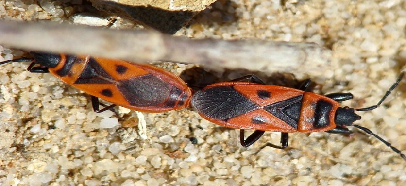
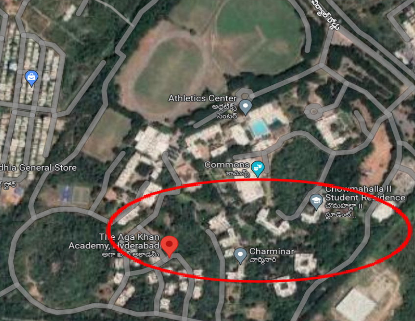
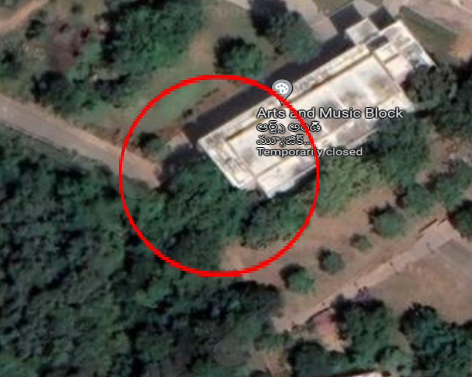
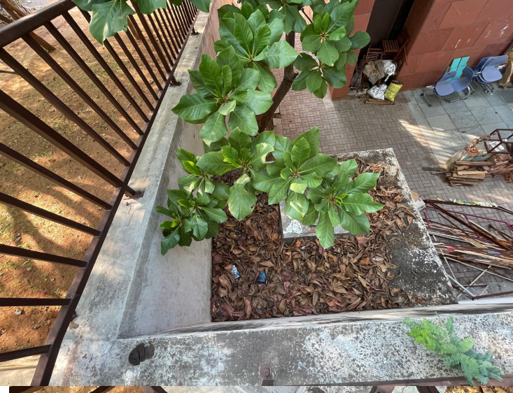
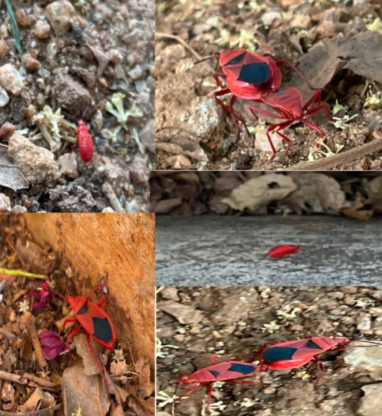
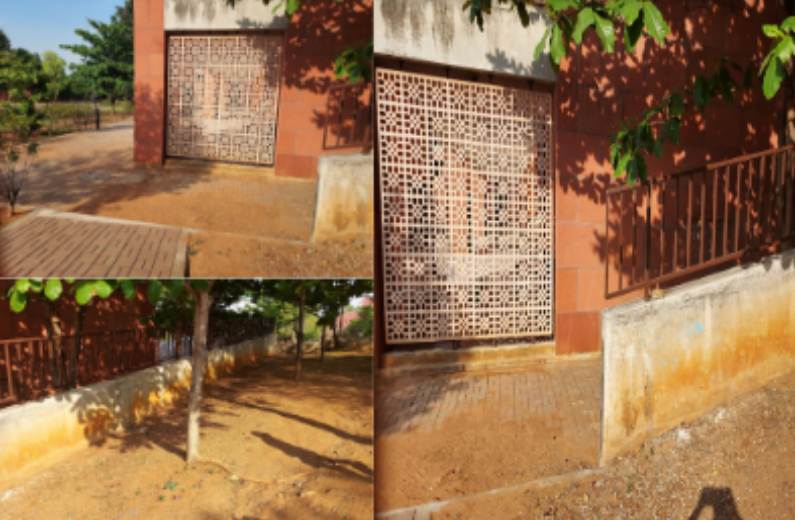
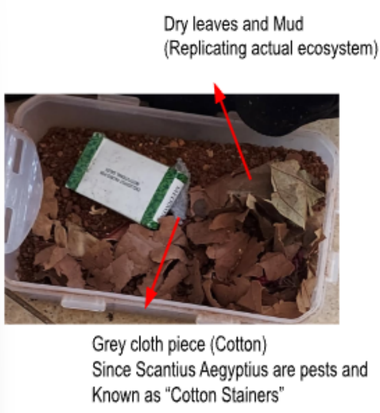
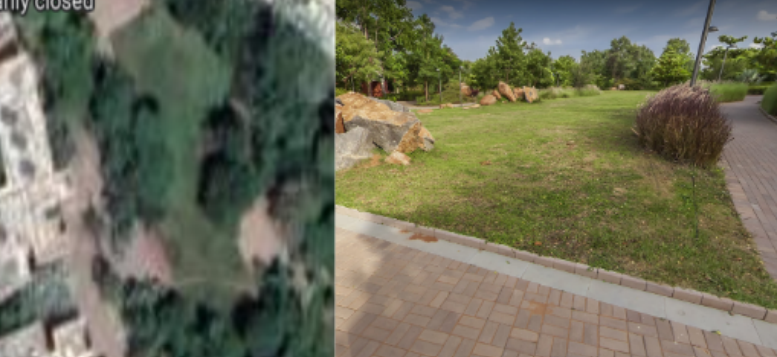
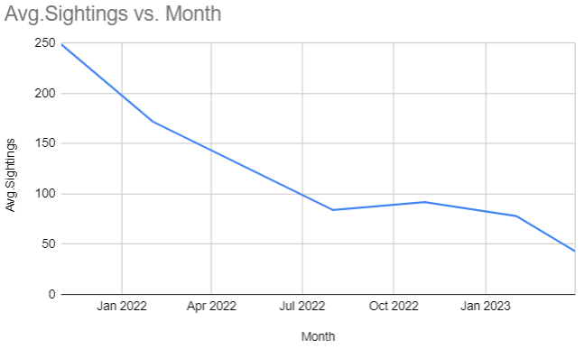
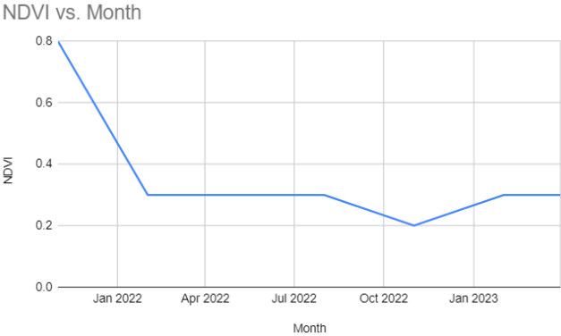

Contents
- Abstract
- Introduction
- Background and Context
- Research Question and Problem Outlined
- Objectives and Scope of Study
- Literature Review
- Gaps In Knowledge
- Methodology
- Results
- Direct Observation
- Physical Observation
- Graphs and Pictorial Analyis
- Implications
- Conclusion
- References
Abstract
This research study investigates the sudden disappearance of the Scantius Aegyptius species using sophisticated methodologies for sampling, data collection, and investigation. Direct observation, surveys, and physical examination provide valuable insights into the behavior, habitat preferences, and threats. Correlation analysis and controlled experimentation elucidate the relationships between environmental factors, human activities, and the species' decline.
The results reveal a high concentration of Scantius Aegyptius in a specific area, comprising approximately 75% of the population, while the remaining individuals are found in dorms and residential areas with dense greenery. Specimens observed include adults, younger individuals, and nymphs, each displaying distinct characteristics. The physical examination highlights the importance of dry and sunny conditions, an abundance of dead leaves, and specific temperature and humidity levels for the species' survival.
These findings emphasize the non-uniform distribution of Scantius Aegyptius across habitats, necessitating further research to understand its range and abundance. The species exhibits specific preferences for dry and sunny areas with dead leaves, providing insights for conservation strategies and adaptability studies. The presence of different life stages suggests a complex life cycle, affecting population dynamics and potential ecological functions of Scantius Aegyptius.
This research underscores the importance of investigating the species' distribution, habitat preferences, reproductive behavior, and ecological impact. Mapping its distribution, understanding its habitat preferences, and studying its reproductive biology can contribute to conservation efforts and pest control strategies. Additionally, exploring its interactions within ecosystems and evaluating its potential as a biocontrol agent against pests are crucial areas for future research.
Introduction
Background and Context
The Red Bug, which is an invasive species that affects crops and plants in California. The Scientific term used is the Scantius Aegyptius which is a small, bright red beetle with a black patch that feeds on the sap of plants, causing yellowing, wilting, and stunted growth. It is about 2-3 mm in length and has a distinctive, rounded body shape.
The Red Bug has a short life cycle of about 20-30 days and can produce multiple generations per year. It feeds on a wide range of host plants, including citrus, avocado, and ornamental trees, as well as weeds and other crops. It can also transmit plant pathogens, making it a significant threat to agricultural production. The Red Bug is native to Africa and the Middle East, but has spread to other parts of the world, including the United States. It was first detected in California in 2008 and has since established populations in several counties.
Control of the Red Bug relies on a combination of cultural, chemical, and biological methods, including pruning and removal of infested plant material, application of insecticides, and use of natural enemies such as parasitic wasps and predatory beetles. Early detection and rapid response are critical to preventing the spread of this invasive pest.1
It is also found in pairs with the same bug (figure 1.1), mating during the December to March season in South Asian regions of the world. It is only found at the time of mating during this time and is rarely located after the mating season, especially in dense rainforest regions.
However, after a drastic change in the campus at The Aga Khan Academy, Hyderabad, a very nature-oriented ecosystem, where the sudden lockdown from the covid outbreak caused a great overgrowth in the trees surrounding the pathways, these bugs were very frequently sighted. After an immediate shift from the lockdown to the opening of school caused some students to experience this period when the greenery and nature were heavily overgrown and covered with trees, and plants around. But when the lockdown and travel restrictions were reduced, this caused more incoming students with no lockdown impositions, forcing the academy to deforestation all the trees around the pathways where students often walk. This was during March 2022, and until March 2023, there was a drastic reduction in the population. This Hypothesis will be tested in this research to know if the real cause of the reduction in the sightings of these bugs were because of this deforestation.
Figure 1.1: © Valter Jacinto. (2009). Scantius aegyptius - Red Bug [Photograph]. Retrieved April 1, 2023 from flickr.com.
Research Question and Problem Outlined
What are the potential factors contributing to the sudden disappearance of the Scantius Aegyptius species over one year, specifically during the 2022 winter to 2023 winter season, and how can these factors be identified and addressed to prevent further decline of this species and potential impacts on the broader campus ecosystem?
- Were there any human activities or disturbances that could have affected the Scantius Aegyptius population, such as construction or pesticide use?
- What other species in the broader campus ecosystem are affected by changes in the Scantius Aegyptius population, and how could their populations be impacted if the Scantius Aegyptius population continues to decline?
The main issue to be researched is the sudden decrease of the Scantius Aegyptius population over 1 year, during the 2022 winter season there was a vast population of this species and sightings were reported around on average 249 per day. It was observed that in the 2023 winter season, there were close to no sightings, averaging at 4, this raised concerns regarding the campus and its ecosystem. The species may have been affected by a disease outbreak or may have been preyed upon by other animals during the winter months, leading to a decline in population.
Host Plants: Scantius Aegyptius are known as Cotton Stainers, and are pests on cotton plants, along with Cheeseweed mallow (Malva parviflora) and Knotweed (Polygonum spp.)2 (Los Angeles County, 2009)
Warm Temperatures: Scantius Aegyptius is adapted to warm temperatures and is most active during the hottest part of the day. Areas with average temperatures above 20°C (68°F) are generally suitable for this beetle.3 (Kutcherov, Lopatina, & Balashov, 2018)
Dry Conditions: Scantius Aegyptius is well adapted to dry conditions and can survive in areas with low humidity and limited water resources. This beetle can extract moisture from its host plants and go without drinking water for long periods.4 (Kutcherov, Lopatina, & Balashov, 2018)
Predators and parasites: Scantius Aegyptius has several natural predators and parasites, including birds, spiders, and parasitoid wasps. Areas with low predator and parasite populations may be more favorable for this beetle.5 (El-Fakharany, Hegazy, & El-Mageed Samy, 2017)
Objectives and Scope of Study
The objectives of this study are to investigate the potential factors contributing to the sudden disappearance of the Scantius Aegyptius species over one year, specifically during the 2022 winter to 2023 winter season, and to identify and address these factors to prevent further decline of this species and potential impacts on the broader campus ecosystem. The study aims to answer research questions related to the possible causes of the decline, including human activities or disturbances such as construction or pesticide use, as well as the impact of the decline on other species in the broader campus ecosystem.
The scope of this study is limited to the Aga Khan Academy campus in Hyderabad, India, and the impact of deforestation on the Scantius Aegyptius population. The study will also explore the impact of the decline of this species on other species in the campus ecosystem. The study will also review relevant literature on the ecology and management of invasive species and the impact of deforestation on biodiversity.
Overall, the study aims to provide insights into the causes of the decline of the Scantius Aegyptius species and to identify potential management strategies to prevent further decline and protect the broader campus ecosystem.
The study will specifically be conducted in the red-colored area in Figure 1.2. This is the Aga Khan Academy Hyderabad Campus, and the study is focused on the area covered By the red colored line. This is because the study aims to collect data on where the bed bugs are mostly sighted, and according to our previous sightings, the red bugs were mostly sighted in this area only. The area also represents the student dormitories of the campus and not any buildings or areas where all the day scholars and residential students visit, whether for academic purposes, or anything social. One possible reason it occurs most in the residential area is because of the greater concentration of greenery and trees. The other places with the athletics center and mostly the left area of the picture are not that concentrated with trees and fauna. The most concentrated was in the bottom right side of the picture, where most red bugs were sighted.
Figure 1.2: The Aga Khan Academy, Hydrabad. Google Maps.
Literature Review
The research by Pluto Dominique on the comparison between S. Aegyptius and Pyrrochoridae Apterus combines field observations with data obtained from laboratory-raised S. aegyptius, a palearctic species similar to P. apterus. Despite their striking similarity in external morphology, bionomics, and behavior, this study reveals several notable differences between the two species.
One significant difference lies in their geographic distribution and ecological requirements. The observations suggest that S. aegyptius and P. apterus exhibit variations in their preferred habitats and geographical ranges. This distinction implies that the two species may have adapted to different environmental conditions and ecological niches.
Moreover, the study highlights variations in the structure of the phallus and the spermatheca between the two species. These reproductive organs play crucial roles in mating and fertilization. The divergent structures suggest potential differences in reproductive strategies and mechanisms between S. aegyptius and P. apterus.6
Adaptation to different environments: The variations in preferred habitats and geographical ranges indicate that S. aegyptius and P. apterus have likely adapted to different environmental conditions. This suggests that each species has specific requirements and tolerances for factors such as temperature, humidity, food availability, or vegetation types. The findings imply that these species have evolved distinct physiological and behavioral traits to optimize their survival and reproductive success in their respective habitats.
Ecological niche differentiation: The differences in habitat preference suggest that S. aegyptius and P. apterus occupy different ecological niches. An ecological niche refers to the specific role and position of a species within an ecosystem, encompassing its interactions with other species and the resources it utilizes. By occupying different niches, these species may reduce competition for resources and minimize potential conflicts. The variations in habitat preference indicate niche differentiation between the two species, allowing them to coexist and exploit different ecological resources within their shared environment. (Pluot, 1978)
Another research study by Carapezza, Kerzhner, and Rieger (1999) focuses on the subspecies of Scantius aegyptius (Linnaeus) and provides insights into their classification and distribution. The authors synthesize the taxonomy and clarify the relationships between different subspecies within the genus Scantius.
The study begins by addressing the synonymy of the genus Lodosiana Ahmad & Abbas (1986) with Scantius Stal, 1866. The authors argue that the differentiation between Lodosiana and Scantius based on coloration of the cerium and obligate macroptery is of limited significance in the classification of Pyrrhocoridae, as similar coloration differences are found in closely related genera like Pyrrhocoris. They also note that Scantius includes other macropterous species, such as S. aurantiacus from Madagascar. Based on these observations, the authors conclude that Lodosiana is synonymous with Scantius.
Carapezza (1995) had previously subdivided Scantius aegyptius into two subspecies based on the structure of male and female genitalia. In this study, Carapezza, Kerzhner, and Rieger refine the distribution of these subspecies and describe intermediate populations between them. They provide new synonymies and introduce a new name, Scantius ae. rossii, to replace the preoccupied S. ae. italicus Rossi.
Scantius aegyptius aegyptius (Linnaeus, 1758) is described as the first subspecies, distributed in the Iberian Peninsula, North Africa, Arabian Peninsula, Near East, Iraq, Iran, Afghanistan, Pakistan, and parts of Europe. The authors note the presence of populations with intermediate characteristics between the two subspecies in the Canary Islands, Iberian Peninsula, NE Iran, and SW Turkmenistan.
Scantius aegyptius rossii nom. nov. is introduced as the second subspecies, distributed in Southern Europe, Italy, the Balkan Peninsula, Ukraine, Russia, Georgia, Armenia, Azerbaijan, Turkey, Iran, Turkmenistan, Tadjikistan, Uzbekistan, Kirgizia, Kazakhstan, and Afghanistan.
The study provides a comprehensive overview of the subspecies of Scantius aegyptius, describing their morphological characteristics and distributions. It contributes to the taxonomy and understanding of the geographic variations within the species. The recognition of two distinct subspecies and the identification of intermediate populations highlight the complexity of the species' differentiation and adaptation to different environments. Further research on the genetic and ecological factors driving these variations would be valuable in understanding the evolutionary history and population dynamics of Scantius aegyptius.7 (Carapezza, Kerzhner, & Rieger, 1999)
The research conducted by Jan Raška and Jan Krajíček, focuses on the mimetic relationship and defensive mechanisms of Scantius aegyptius larvae in comparison to Pyrrhocoris apterus. The study investigates the composition and function of the larval secretion in S. aegyptius and explores the mimetic relationship between the two species. The researchers analyze the chemical components of the larval secretion using gas chromatography mass spectrometry (GC-MS) and conduct experiments with jumping spiders (Evarcha arcuata) to assess the effectiveness of anti-predatory defenses in larvae of both species. The findings shed light on the mimetic relationship and provide insights into the defensive strategies employed by S. aegyptius larvae.
The phenomenon of anti-predatory mimicry involves a mimic species resembling a model species that is avoided by predators. The mimic's resemblance to the model provides protection against predators. Müllerian mimicry refers to a situation where both the model and mimic possess effective anti-predatory defenses, resulting in a mutual benefit. In contrast, Batesian mimicry occurs when the mimic lacks defensive mechanisms and gains protection by resembling a defended model.
Mimetic complexes comprise multiple species that share warning signals, ranging from the Batesian to Müllerian mimicry spectrum. The Western Palearctic region hosts a well-defined mimetic complex composed of red-and-black insects and spiders. This complex includes species from various true bug and beetle families, such as Pyrrhocoridae and Coccinellidae, and also features taxa like ladybird spiders (Eresus spp.) and burnet moths. Within this complex, Pyrrhocoris apterus and Scantius aegyptius, two red-and-black pyrrhocorid true bugs, exhibit a particularly close similarity in their color patterns. Their geographical overlap, shared habitat and host plant preferences, and co-occurrence in aggregations suggest a potential mutual enhancement of their anti-predatory protection.
True bugs possess exocrine scent glands that play a role in anti-predatory defense. Pyrrhocoris adults produce an aldehyde-rich secretion effective against various predators, while their larvae mainly produce ketoaldehydes. In contrast, Scantius adults produce a secretion dominated by atypical chemicals, with less effective defense compared to Pyrrhocoris. However, the composition and function of Scantius larval secretion remain poorly understood. Predators learn to avoid unprofitable prey quickly and retain their avoidance behavior for longer periods. Therefore, the relative effectiveness of the anti-predatory defenses of Pyrrhocoris and Scantius larvae and the mimetic relationship between the two species need further investigation.
The research contributes to understanding the mimetic relationship and defensive mechanisms of Scantius aegyptius larvae compared to Pyrrhocoris apterus. The chemical analysis of the larval secretion provides insights into the unique composition of Scantius larvae and their potential defensive functions. The experiments with jumping spiders demonstrate the effectiveness of the defensive mechanisms in both species and suggest a Müllerian mimetic relationship, advantageous to both Scantius and Pyrrhocoris larvae. This study highlights the complexity of mimicry dynamics between unequally defended species and emphasizes the need for considering various factors, such as prey density, abundances, and the complexity of the prey community, in understanding these relationships.8 (Raška et al, 2020)
Gaps in Knowledge
Some areas with gaps in knowledge and further research to be done can be addressed by this research investigation:
Distribution: Although these bugs are believed to be native to the Mediterranean region, their exact distribution is not well-known. There are few studies on their distribution and abundance in different parts of the region, which limits our understanding of their ecology and behavior.
Habitat Preferences: While Scantius Aegyptius is known to inhabit a wide range of habitats, including agricultural fields, forests, and coastal areas, little is known about their specific habitat preferences. More research is needed to understand the factors that influence their habitat selection and how they adapt to different environments.
Reproductive Behaviour: Although there have been some studies on the reproductive biology of Scantius Aegyptius, much remains unknown about their mating behavior, egg-laying, and development. For example, it is not clear how many times they mate, how many eggs they lay, and how long it takes for their eggs to hatch.
Impact on Ecosystems: While these bugs are generally considered to be harmless to humans, their impact on ecosystems is not well-understood. More research is needed to understand their role in food webs and how they interact with other species in their habitats.
To address the gaps in knowledge about Scantius Aegyptius, this research investigation can focus on various areas. One such area is their distribution, which is not well-known despite being believed to be native to the Mediterranean region. This lack of information on their distribution and abundance in different parts of the region hinders our understanding of their behavior and ecology. Additionally, although these bugs are known to live in diverse habitats, little is understood about their specific habitat preferences. Further research is required to comprehend the factors that influence their habitat selection and how they adapt to different environments.
Another area where more research is needed is their reproductive behavior. Although some studies have been conducted on their reproductive biology, much remains unknown about their mating behavior, egg-laying, and development. Specifically, it is unclear how many times they mate, how many eggs they lay, and the time required for their eggs to hatch.
Lastly, the impact of Scantius Aegyptius on ecosystems is not well-understood, even though they are generally considered harmless to humans. Further research is needed to comprehend their role in food webs and their interactions with other species in their habitats. Addressing these gaps in knowledge can provide valuable insights into the behavior and ecology of Scantius Aegyptius, which can help inform their conservation and management.
The objectives of the study are directly addressing some gaps in knowledge about Scantius Aegyptius. Firstly, the study aims to investigate the sudden disappearance of the species over one year, which is one of the gaps in knowledge. By identifying and addressing the factors that have contributed to the decline, the study can provide valuable insights into the ecology and behavior of Scantius Aegyptius and help prevent further decline of this species. Additionally, the study aims to explore the impact of the decline of this species on other species in the campus ecosystem, which is another gap in knowledge related to the impact of Scantius Aegyptius on ecosystems.
The scope of the study is also limited to the Aga Khan Academy campus in Hyderabad, India, which is an area where Scantius Aegyptius has been previously sighted. By focusing on this specific area, the study can collect data on where the bugs are mostly sighted, which can help researchers understand their habitat preferences. The study also aims to explore the impact of deforestation on the Scantius Aegyptius population, which is another gap in knowledge related to their habitat preferences and adaptation to different environments.
The study's objectives and scope are well-aligned with addressing some gaps in knowledge about Scantius Aegyptius, specifically related to their distribution, habitat preferences, and impact on ecosystems. The study can provide valuable insights into the causes of the decline of the species and identify potential management strategies to protect the broader campus ecosystem.
Creating a terrarium or a small habitat replication for Scantius Aegyptius can be a useful tool for researchers and conservationists for several reasons. Firstly, it can provide a controlled environment for studying the behavior, reproduction, and habitat preferences of Scantius Aegyptius. By observing their behavior and responses to different environmental conditions, researchers can gain a better understanding of the factors that influence their habitat selection and how they adapt to different environments.
Secondly, a terrarium or small habitat replication can be used for breeding and rearing Scantius Aegyptius in captivity. This can be especially useful for conservation efforts, as it can help to establish and maintain populations of the species in areas where they are endangered or threatened.
A terrarium or small habitat replication can be used as an educational tool to raise awareness about the importance of conserving Scantius Aegyptius and other species. By showcasing these bugs in a simulated natural habitat, people can gain a better appreciation of their unique characteristics and the important role they play in their ecosystems.
Using dry leaves, a lot of mud, cotton material, etc, the terrarium can be replicated and put under different temperatures, outside or air conditioned to experiment with various conditions of living for Scantius Aegyptius.
Methodology
To investigate the potential factors contributing to the sudden disappearance of the Scantius Aegyptius species, the following methodologies can be used for sampling, data collection, and investigation:
A systematic sampling approach can be used to identify potential locations where the Scantius Aegyptius species were sighted previously. A stratified sampling approach can also be used to divide the area covered by the red line into smaller sections based on vegetation density, human activities, and disturbances such as construction or pesticide use.
This approach will enable the identification of potential factors that might be contributing to the decline of the species.
The following methods can be used to collect data:
Direct Observation: We can conduct direct observations of the Scantius Aegyptius species to identify their behavior, habitat, threats, and habitat examination. Observation can be conducted during different times of the day on the weekend to capture different behaviors.
Surveys: Surveys can be conducted by us at the school, especially in the residential community, to collect information on human activities that might be contributing to the decline of the species. Surveys can be distributed to students, staff, and faculty members of the campus to collect information on pesticide use, construction activities, sightings, etc.
Physical Examination: Physical examination can be conducted to identify signs of deforestation, such as stumps or tree debris, dry leaves, and other environmental factors that might be contributing to the decline of the insect in its terrarium, implying results of the actual habitat.
The following methods can be used to investigate the potential factors contributing to the decline of the species:
Correlation Analysis: Correlation analysis of relationships between environmental factors, human activities, such as deforestation of the habitat across school pathways, and its relation to the decline of the Scantius Aegyptius.
Experimentation: Experimentation can be conducted to test the impact of different factors on the Scantius Aegyptius species. A controlled experiment to test the impact of pesticide use on the Scantius Aegyptius, since it is a pest itself.
Results
Direct Observation
In the circled spot it was observed that the spot was the habitat of an estimated 75% of the Scantius Aegyptius population, while the dorms and residential area with dense greenery contributes to the rest.
We have observed not only adult bugs of the ideal size of which the bugs are mostly found, but the younger ones as well as, and the mutualist bugs living in pairs, singular ones, nymphs of the bugs in pure bright red in color, compared to the darker tone of red and black patches of the adult one, etc.
We took the Scantius Aegyptius as a lab sample and treated it with care, to replicate its habitat we constrained it in a terrarium filled with soil and dry dead leaves, replicating its habitat was crucial not to kill it.
Figure 2.1: Google Maps- Aga Khan Academy
Satellite View of the area with the most number of observations of the Scantius Aegyptius.
The place was also a very dry place with a lot of sunlight entering that area, even with Trees over. The place was also found with a huge amount of dry leaves, as well, on which the bugs were found too.
The weather on the day of observation was also 36 C, 9, indicating fairly hot weather, and the humidity only being 35% only. According to the previous literature review, which states Scantius Aegyptius lives in very dry weather conditions with low moisture levels, this can be proved with the observations made by us.10
Figure 2.2: The Picture of the area described above in Figure 2.1.
Physical Observation
Results also suggested that the Scatnius Aegyptius ranged from sizes 2.2 cm to 4.1 cm (considering only adults) for a sample size of 12 in the area investigated (figure 2.2 and 2.4) The average was found to be 2.7 cm of the Scantius Aegyptius in the ecosystem of the academy, and whereas the research at UC Riverside suggests the average length is 0.7 cm to 0.9cm, the Scantius Aegyptius vary from 0.7 to 0.9 11 cm in length, the bugs found in the academy are relatively way above average.
Figure 2.3: Scantius Aegyptius at Different stages of life (Nymph, Adult, Mutualist)
The larger average length observed in the Scantius Aegyptius population in the academy ecosystem compared to the average length reported in the UC Riverside research indicates that the local conditions within the academy environment are conducive to the growth and development of the insects. These conditions may provide abundant food resources, favorable habitat structures, or protection from predators, which ultimately contribute to the larger size of the population.
Area where most of the Scantius Aegyptius were found (refer to Figure 2.1).
Also focusing on the ecosystem damage in the academy from November 2021 to 2022 march, after regular tree and plant clearance during vacations, has caused from 56 sightings a day of Scantius Aegyptius regularly in the dorms to almost 2-3 sightings a day. (Near dorms only)
Figure 2.5: The Status of the Terrarium and its interior elements after the completion of the investigation (refer to Figure 2.1.)
Graphs and Pictorial Analysis
These images imply that the main reason for the increase in sightings of the red bugs and also decline is due to ecosystem damage. From March 2020, to October 2021, with no residents residing in the campus whatsoever, led to no maintanneance of vegetation whatsoever. And after the return of students and faculty, the vegetation had to be deforestation, caused the decline in the sightings of the Scantius Aegyptius.
Figure 3.1: Satellite Image of the Image on the right, taken in 2016, which is similar to mid-2022, where during these time periods there were very minimal sighting of the bugs.
Figure 3.2: Line graph of sightings during selected time periods
Figure 3.3: Like graph of Normalized Difference Vegetation Index during the time periods
Implications
The research data presented includes monthly NDVI (Normalized Difference Vegetation Index) values and average sightings of Scantius Aegyptius insects. Here is an enhanced version of the text that conveys a more quantitative analysis of the research:
The study collected data on Scantius Aegyptius sightings and NDVI values over a period of time, allowing for quantitative analysis of the insect population and vegetation conditions. The NDVI values provide an indication of the vegetation greenness and health, which can be correlated with the abundance of food resources for the insects. The sightings of Scantius Aegyptius serve as a measure of the population density and distribution.
Analyzing the NDVI values reveals a variation in vegetation conditions throughout the study period. The highest NDVI value of 0.8 in November 2021 suggests a relatively healthier and greener vegetation cover, which may have contributed to the higher average sightings of 249 during that month. However, from February 2022 to April 2023, the NDVI values consistently remained at 0.3, indicating a relatively lower vegetation health. This corresponds to a decrease in the average sightings, reaching as low as 43 in April 2023.
The correlation between NDVI values and Scantius Aegyptius sightings highlights the influence of vegetation conditions on the insect population. The decline in sightings during the period of lower NDVI values suggests a potential scarcity of food resources or less favorable habitat conditions for the insects. Conversely, the higher average sightings during periods of higher NDVI values indicate more abundant food resources and favorable habitat conditions.
Additionally, the research provides quantitative information about the size range of Scantius Aegyptius individuals. The observed size range of 2.2 cm to 4.1 cm for adult individuals, with an average length of 2.7 cm, indicates size variation within the population. Further investigation can explore the factors contributing to this size variation, such as genetic factors, environmental conditions, or individual growth patterns.
Comparing the average length of Scantius Aegyptius observed in the academy ecosystem (2.7 cm) with the average length reported in the UC Riverside research (0.7 cm to 0.9 cm) reveals a significant difference. The insects found in the academy are relatively larger than the average length reported elsewhere. This suggests that the local conditions within the academy environment provide favorable factors for the growth and development of the insects, leading to a larger-sized population.
The quantitative analysis of the research findings enhances our understanding of the relationship between vegetation conditions, insect population dynamics, and the influence of local environmental factors on the size and distribution of Scantius Aegyptius.
Conclusion
Based on the observations and findings of the study on Scantius Aegyptius, it is evident that further research is essential to gain a comprehensive understanding of this species and its ecological implications. Mapping its distribution, studying its habitat preferences, and investigating its life cycle and reproductive behavior are crucial for effective pest control and conservation efforts. Additionally, exploring its ecological functions and potential as a biocontrol agent against other pests can provide valuable insights for ecosystem management.
In conclusion, the research underscores the need for continued investigation into Scantius Aegyptius to inform conservation strategies and enhance our understanding of its ecological role. The species exhibits specific habitat preferences, highlighting the importance of mapping its distribution across different regions and habitats. By studying its reproductive biology and population dynamics, we can gain insights into its impact on ecosystems. Moreover, exploring its potential as a biocontrol agent and understanding its interactions with other species will contribute to integrated pest management approaches.
Further studies should focus on mapping the distribution of Scantius Aegyptius across diverse habitats and regions to identify factors influencing its range and abundance. Investigating its habitat preferences, including environmental factors such as vegetation cover, soil moisture, and temperature, will provide valuable insights into its adaptability. Furthermore, research on the species' reproductive biology, including mating patterns, egg-laying behavior, and hatching times, will shed light on its population dynamics.
To comprehend the ecological functions of Scantius Aegyptius, future studies should investigate its role in food webs and its interactions with other species in its habitats. This knowledge will inform the species' potential as a biocontrol agent against pests. By conducting comprehensive research in these areas, we can develop effective conservation strategies and make informed decisions regarding the management of Scantius Aegyptius and other species within its ecosystems.
References
- University of California Riverside Center for Invasive Species Research. (n.d.). Red Bug. Retrieved April 1, 2023, from https://cisr.ucr.edu/invasive-species/red-bug.
- LOS ANGELES, COUNTY OF. "Red Bug (Scantius aegyptius)." (2009).
- Kutcherov, Dmitry, Elena Borisovna Lopatina, and Sergei Balashov. "Convergent photoperiodic plasticity in developmental rate in two species of insects with widely different thermal phenotypes." (2018).
- El-Fakharany, S. K., F. H. Hegazy, and Mahmoud Abd El-Mageed Samy. "Survey and Population Fluctuations of Arthropod Pests and Predators in Sweet Potato at Nile Delta, Egypt." Egyptian Academic Journal of Biological Sciences. A, Entomology 10.7 (2017): 277-285.
- Pluot, Dominique. "Données sur Scantius Aegyptius Hémiptère Pyrrhocoride Paléarctique, Comparaison Avec Pyrrhocoris Apterus." Annales de la Société entomologique de France (NS). Vol. 14. No. 4. Taylor & Francis, 1978.
- Carapezza, A., I. M. Kerzhner, and Chr Rieger. "On the subspecies of Scantius aegyptius (LINNAEUS)(Heteroptera: Pyrrhocoridae)." Zoosyst. rossica 8 (1999): 129-131.
- Raška, Jan, et al. "Larvae of pyrrhocorid true bugs are not to spiders’ taste: putative Müllerian mimicry." Biological Journal of the Linnean Society 129.1 (2020): 199-212.
- Google Maps. "The Aga Khan Academy, Hyderabad." Retrieved from https://www.google.com/maps/place/The+Aga+Khan+Academy,+Hyderabad/@17.248189,78.4807794,1406m/data=!3m1!1e3!4m6!3m5!1s0x3bcba35107b7d6b5:0xd611860f752c0785!8m2!3d17.2465065!4d78.4804952!16s%2Fm%2F0gjc4c2!5m1!1e4.
- AccuWeather. (n.d.). Hyderabad April Weather. Retrieved from https://www.accuweather.com/en/in/hyderabad/202190/april-weather/202190.
- Wanderlog. (n.d.). Hyderabad Weather in April. Retrieved from https://wanderlog.com/weather/78/4/hyderabad-weather-in-april.
- Center for Invasive Species Research (CISR). "Red Bug." CISR, University of California, Riverside, n.d. https://cisr.ucr.edu/invasive-species/red-bug.
- Krajicek, Jan, et al. "Comparative analysis of volatile defensive secretions of three species of Pyrrhocoridae (Insecta: Heteroptera) by gas chromatography-mass spectrometric method." PloS One 11.12 (2016): e0168827.
- Votýpka, Jan, et al. "Cosmopolitan distribution of a trypanosomatid Leptomonas pyrrhocoris." Protist 163.4 (2012): 616-631.
- Mata, Luis, Jose Manuel Grosso-Silva, and Marta Goula. "Pyrrhocoridae from the Iberian Peninsula (Hemiptera: Heteroptera)." Heteropterus Revista de Entomología 13.2 (2013): 175-189.
- dieses Gebietes, Hemipteren. "Beitrag zur Hemipteren-Fauna von Turkmenien." Wiener Entomologische Zeitung 8 (1889): 169.
- Morrison, Jane, et al. "The attractiveness of five common Mediterranean weeds to pollinators." Agronomy 11.7 (2021): 1314.
- Şişli, M. N. "The anatamy of the female genital organ of P. apterus." Turkish Journal of Entomology 3.4.
- Beneš, Josef, and Petr Veselý. "The ability of lizards to identify an artificial Batesian mimic." Zoology 123 (2017): 46-52.
- AHMAD, İmtiaz, and Narjis ABBAS. "Pyrrhocoris cins grubunun (Hemiptera: Pyrrhocoridae: Pyrrhocorinae) Indo-Pakistan bölgesinde yeni bir cins ve yeni bir türünün deskripsiyonları ile aralarındaki ilişkiler." Turkish Journal of Entomology 10.2 (1986).
- Sousa, Pedro, et al. "The InBIO Barcoding Initiative Database: DNA barcodes of Portuguese Hemiptera 01." Biodiversity Data Journal 9 (2021).
- Sciberras, Arnold, and Jeffrey Sciberras. "Fauna at Pembroke Garigue Heritage Project."
- Endrestøl, Anders, and Steffen Roth. "The firebug Pyrrhocoris apterus (Linnaeus, 1758)(Hemiptera, Heteroptera) new to the Norwegian fauna–with an explosive expansion in Northern Europe." (2020).
- Sadullaevich, Baltabaev Adamboy, and Makhmudova Mamlakat Mirganievna. "FAUNA AND PLANT NUTRITION OF BED-BUGS BELONGING TO THE FAMILY OF MIRID (MIRIDAE) FOUND IN COTTON, ALFALFA, VEGETABLE AGROCENOSES AND NATURAL ECOSYSTEMS OF THE AMUDARYA AND KHODJAYLI DISTRICTS OF THE REPUBLIC OF KARAKALPAKSTAN." (2022).
- Valcárcel, Javier Pérez, and Fernando Prieto Piloña. "Aportaciones al inventario de los Heteroptera (Hemiptera) de Galicia (NO Península Ibérica). II. Familias Pyrrhocoridae Amyot & Serville, 1843, Alydidae Amyot & Serville, 1843 y Stenocephalidae Dallas, 1852." Arquivos Entomolóxicos 7 (2012): 85-92.